PHOTO ALBUM, CLARK LINE
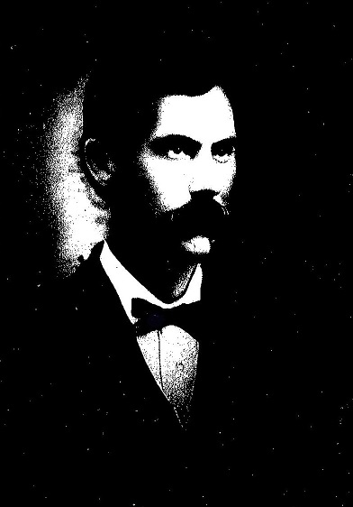
James William "Buck" Clark
b. 1862 ?Feliciana, Graves Co KY d. 1940 near Bowie, TX.
Principal genetic ancestor, maternal great grandfather.
Southern thoroughbred descended from British gentry
on both father and mother (THOMAS, his strongly dominant bloodline) sides.
Direct paternal descendant of colonial Virginia planter Captain Christopher Clark (son of Micajah And Sallie Ann MOORMAN CLARK,
b. ca 1681 VA) and Penelope ?BOLLING.
(BOLLING: ?Penelope related to Col Robt BOLLING (or his son John m. Kennon) m. 2 STITH (m. 1 Jane Rolfe granddaughter of Pocahontas), see below
related Alanson MOORMAN m. STITH (desc from Col Robt BOLLING); also, Col Robt Bolling's grandmother was AGNES CLARKE, dau of London Merchant Thomas Clarke, "this is the same Thomas Clarke, London
merchant, who shows up in the land records of widow [ancestor] Margaret Clarke of Barbados". Col Robt BOLLING was son of John of BOLLING Hall, Bradford,
Yorkshire Eng... Son of Capt Chris Clark was ancestor BOLLING Clark... ?Bollings descend from Norman Counts of Boulogne, France.)
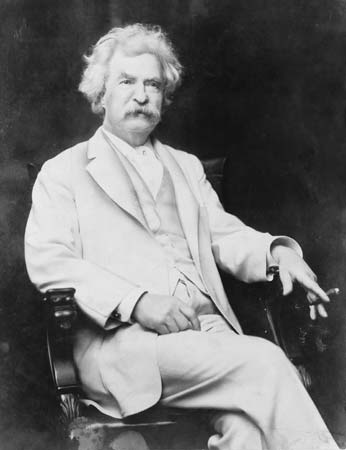
Samuel Clemens aka "Mark Twain"
Maternal ?double Cousin on Clark and Moorman lines.
Paternal 2nd great grandmother was Agnes, daughter of Captain Christopher Clark and Penelope ?Bolling.
?Most intelligent American of 19th century and author of one of greatest American novels, "Huckleberry Finn".
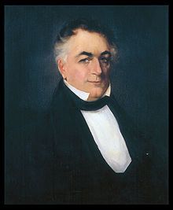
Governor James Clark
Maternal cousin, 1836 Governor of Kentucky.
Descendant of Captain Christopher Clark and Penelope ?Bolling.
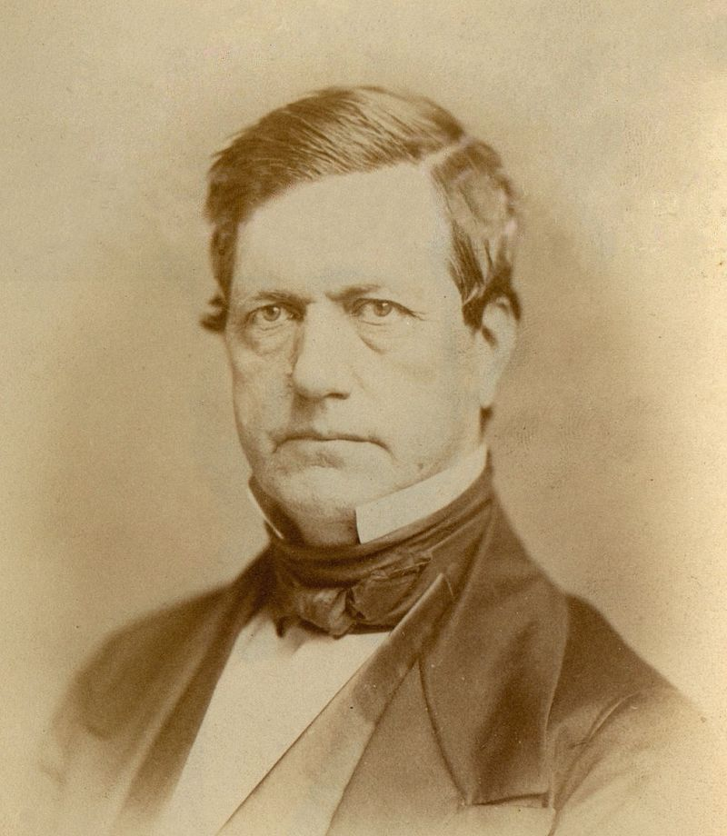
John Bullock Clark Sr
Maternal cousin, Congressman b. Madison Co Kentucky, d. Fayette MO.
Descendant of Captain Christopher Clark and Penelope ?Bolling.
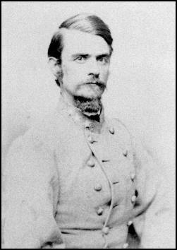
John Bullock Clark Jr
Maternal cousin, General CSA and Congressman of Fayette MO.
Descendant of Captain Christopher Clark and Penelope ?Bolling.
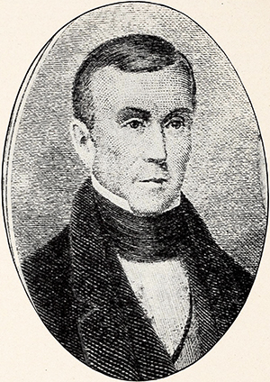
Governor Ratliff Boon
Maternal cousin through Charity Boone Clark (m. David Clark, d. aft 1840 Graves Co KY), d. Louisiana MO.
Descendant of Thomas and Eliz Ratcliff Boon m. ca 1674.
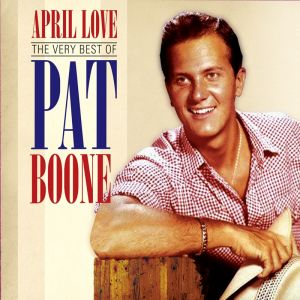
Pat Boone
Singer. Maternal cousin through Charity Boone Clark who was ?2nd cousin once removed of his 3rd great grandfather Bryant Boone. Paternal great grandfather of Feliciana, Graves Co KY area.
Descendant of Thomas and Eliz Ratcliff Boon m. ca 1674.
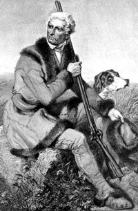
Daniel Boone
Kentucky frontiersman, distant maternal cousin through Charity Boone Clark.
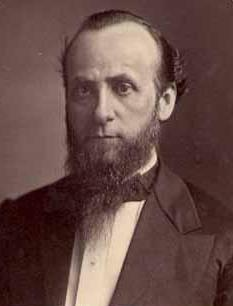
Judge Andrew Richmond Boone
Judge of Mayfield KY, maternal cousin through Charity Boone Clark. 1861 secessionist leader.
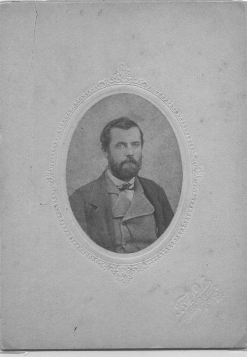
Major G.W. Clanton, CSA
No relation, but interesting as a paternal 2nd great grandfather of Pat Boone,
1870 resident of Feliciana KY and Major of 8th/12th KY Cavalry CSA. Born Maury Co TN.
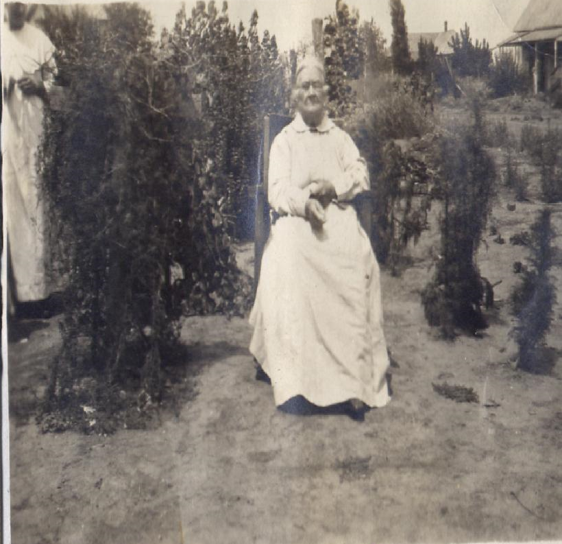
Narcissus Byrd Curtner
Maternal 2nd great grandmother, b. AL 1844 buried Chico, Wise Co Texas.
Said to be by 2 sources descended from prominent colonial Byrd family of tidewater
Virginia (from Thomas Byrd 1654-1710, brother of Wm I of Westover Plantation).
Mother-in-law of Buck Clark, and wife of Confederate veteran John Henry Curtner, 23rd Texas Cavalry CSA.
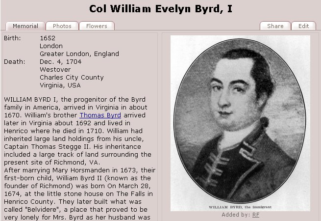
William Byrd I of Westover Plantation Virginia
1652-1704. Brother of Thomas Byrd 1654-1710, ?ancestor of Narcissus Byrd Curtner.
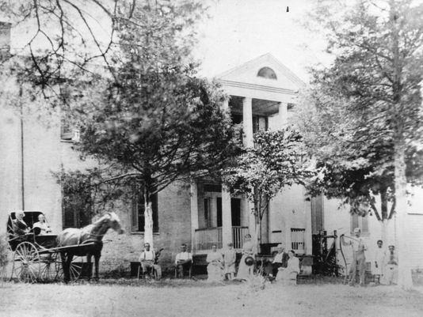
Riverside (Farnsley-Moremen Landing) Louisville, Kentucky
Plantation owned by maternal cousin Alanson MOORMAN (m. Rachel STITH, descendant of Col Robt BOLLING, Alanson's mother was also Eliz STITH and desc from Col Robt BOLLING (see James CLARK, above)) 1862. The MOORMANS and CLARKS
came to America together 1669 and were intermarried. Moorman family also had Glenn Fount Plantation just east of Brandenburg KY,
Alanson - 29 Slaves 1850.